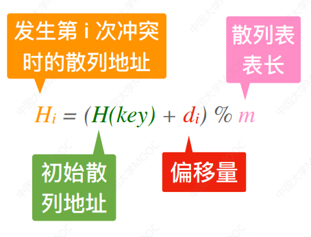

散列表
散列表
概念

聚集
- 聚集(堆积): 不同关键字射向同一散列地址
- 处理冲突方法 选取不当的结果
装填因子(负载因子)
定义
例题
开散列表(拉链法)填装因子为 5，求开散列表平均链长
平均查找长度
影响因素
- 平均查找长度 与装填因子 直接相关
- 平均查找长度 直接 受到堆积现象影响
- 平均查找长度 受 散列函数，冲突解决策略 影响
- 平均查找长度 不直接 依赖于 已有表项个数，表长
ASL
- 链地址法查找失败一般只计算与关键字的比较次数，不包含扫描到空指针的那一次
- 链地址法查找失败默认算空指针查找次数
例题
条件
装填因子 0.7 的散列表存储 (7, 8, 30, 11, 18, 9, 14)，H(key) = (key * 3) mod 7，线性探测法处理冲突
表长
- 装填因子 0.7 ，7 个键，表长为 10
计算位置
- 7 * 3 % 7 = 0
- 8 * 3 % 7 = 3
- 30 * 3 % 7 = 6
- 11 * 3 % 7 = 5
- 18 * 3 % 7 = 5 5 + 1 = 6 5 + 2 = 7
- 9 * 3 % 7 = 6 6 + 1 = 7 6 + 2 = 8
- 14 * 3 % 7 = 0 0 + 1 = 1
散列表
1 | |
成功查找长度
- 只包含 7 个键
1 | |
失败查找长度
- mod 7 代表哈希只会等概率映射到 0 到 6 位置
- 每个下标的次数是从该下标起比较至空位置（查找失败）的比较次数
1 | |
散列函数
设计规则

除留余数法


直接定址法

数字分析法

平方取中法

拉链法
插入

优化: 有序链表
查找长度: 查找中比对关键字次数
删除: 查找 → 删除结点
开放定址法
- 开放定址: 散列定址对 同义词 和 非同义词 开放
探查第 i 次冲突的散列地址
- 线性探测法
- 平方探测法
- 双散列法
- 再散列法依据题目具体要求
代码
删除
逻辑删除
1
- 不能直接删除元素，应该给要删除元素打上删除标记
- 否则会截断其后探测路径，中断元素查找
2
- 某位置被 逻辑删除 / 重新插入新元素 不改变其他位置 查找次数
- 该位置不在探测路径无影响
- 该位置在探测路径中相当于冲突不影响查找次数
- 删除插入新元素哈希表的 ASL =